01 Anaconda
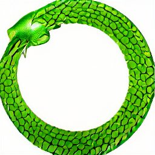
1 The Anaconda and Python labs
The purpose of this page is to get you up and running in the “ecosystem” of Anaconda and Jupyter Lab, and associated aspects of the workflow on your local machine.
The labs you will engage with are an introduction to Python and Pandas (a popular package for data manipulation and basic analysis in Python), or an easy refresh if you have already used the tools.
Anaconda is widely used to manage toolsets and packages for data science projects including versions, environments and associated settings.
Jupyter Lab is an interface that is very popular for embedding formatted information with Python computer code and allows interactive computing right in a regular web browser.
1.1 Jupyter Lab kernal
Launch Anaconda and Jupyter Lab
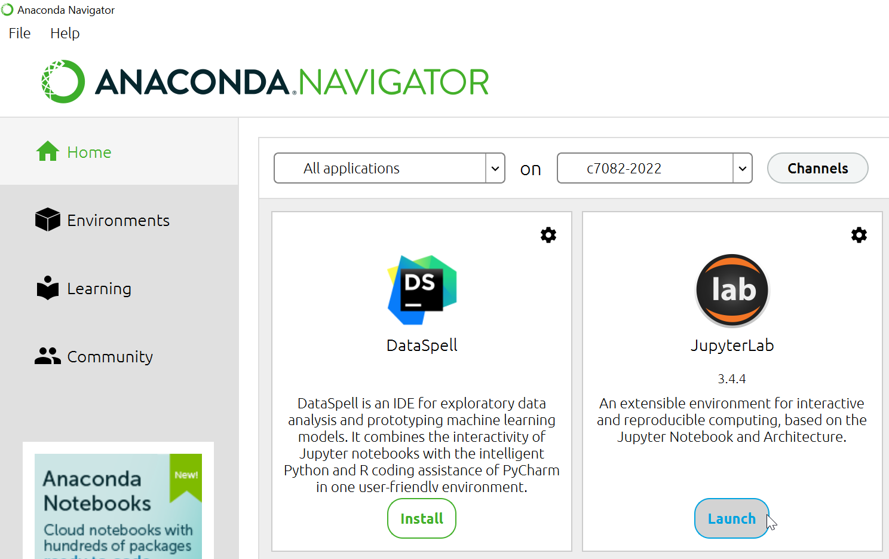
The kernal for your session refers to the software engine that will execute your code. For some applications, you may want to manage several different kernals. For now do not worry about this and select the default kernal.
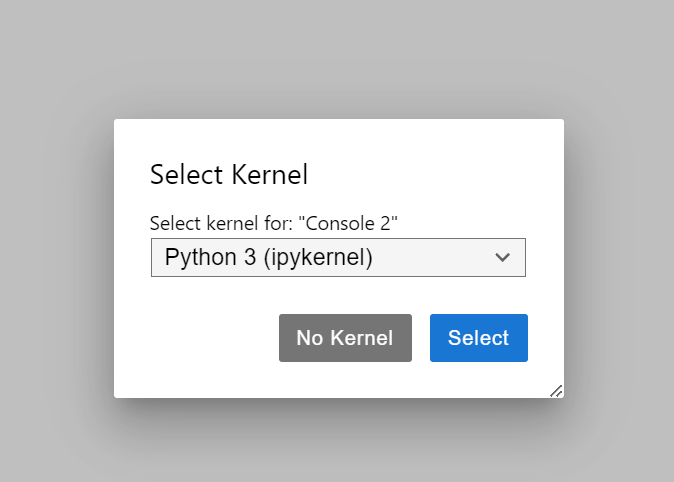
1.2 Working directory
I recommend just using the navigation pane on the left hand side of Jupyter Lab to make a new folder that will be the working directory you will work with locally for these labs.
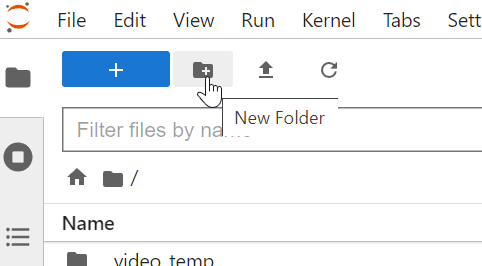
My working directory looks like this:
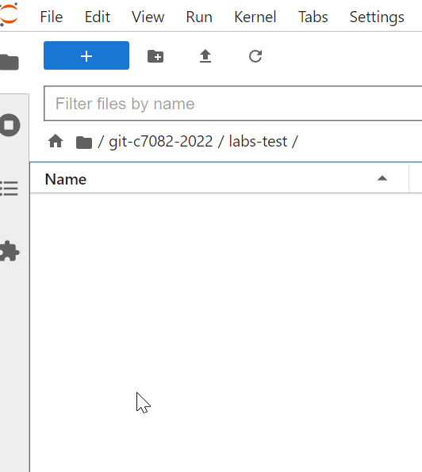
2 We need to talk about The Console
The Console implemented in various operating systems is powerful, fast way to manipulate files and to issue commands. You can accomplish a lot with very little knowledge in relative safety in modern computing environments. We will just scratch the surface here, but it is highly useful to get used to using the console.
2.1 Launch a new console
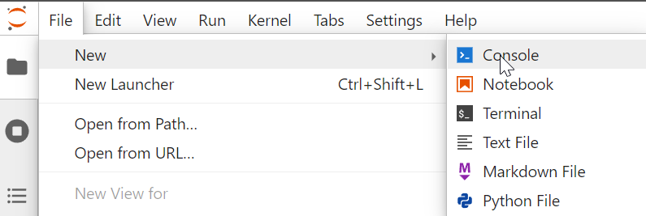
Mine looks like this (yours may differ slightly).
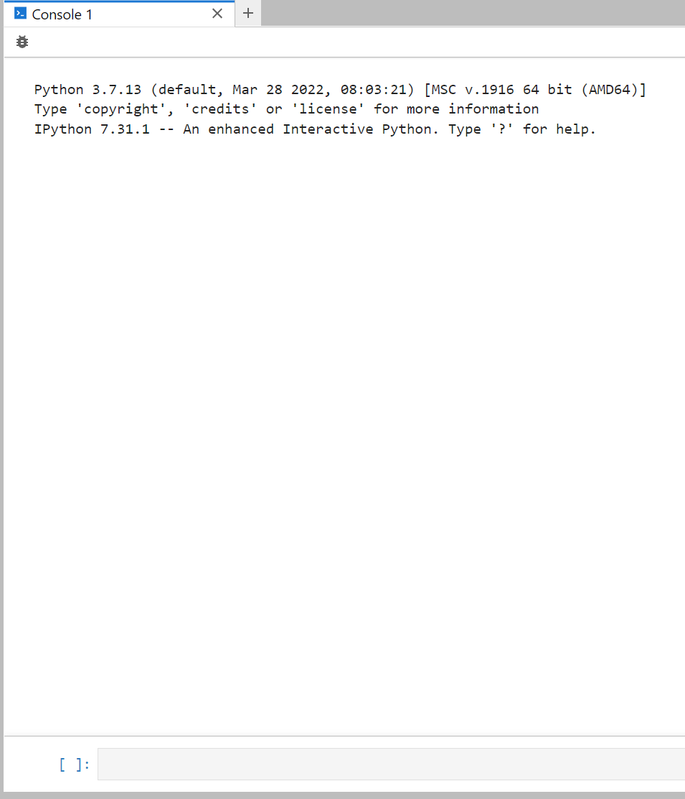
Note the console is a way to interact with our Python environment for “system commands” we may not wish to embed in a notebook.
3 git clone the lab materials
The Python lab materials are available on Github at https://github.com/C7082-2022/labs-python
We will use the Git command clone to make a copy of the labs-python repository on your local machine. Of course you can download all the stuff manually (like any muggle would), but it is far more powerful and so easy to clone it using Git.
3.1 Using clone
Execute the following command in your Console (remember shift + enter to execute a cell):
!git clone https://github.com/C7082-2022/labs-pythonYour console should look similar to mine:
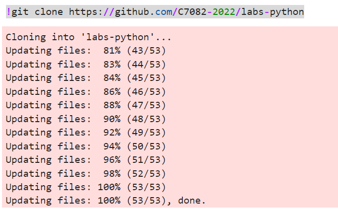
3.2 Check the repo has been downloaded successfully
You can now browse the repo in your local file structure on the left file browser panel. Mine looks like this:
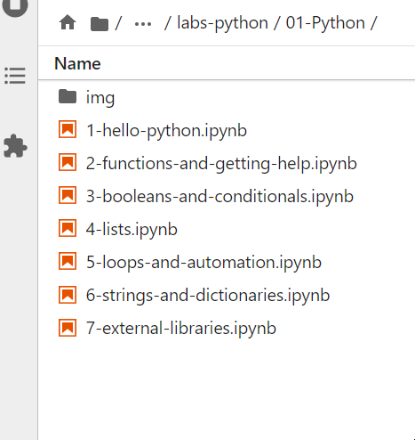
4 Open first lab
Navigate to the 01-Python folder inside the root labs-python folder.
Now you can open the first lab notebook (just doublke click to open in Jupyter Lab) and work through the material interactively.
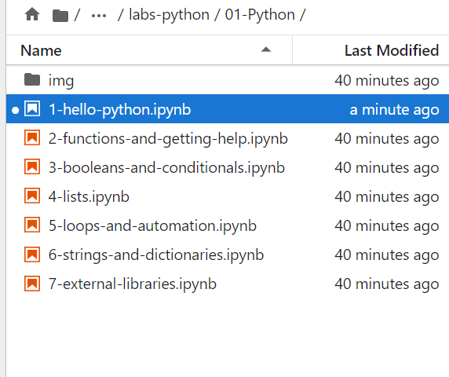
5 Tips
Start a cheatsheet (e.g. in your own R markdown doc…) for Python (and Terminal) commands as a brief reference for yourself.
Run all the commands yourself and experiment with your own code in new cells. Do not rush through these notebooks - invest in them.
Consider taking time to learn and practice hotkeys in Jupyter Lab - this will be a valuable use of your time!
When you open a new notebook, you can clear the outputs to avoid confusion when you run your own cells (the system I use for these pages prevents me from being able to do this)
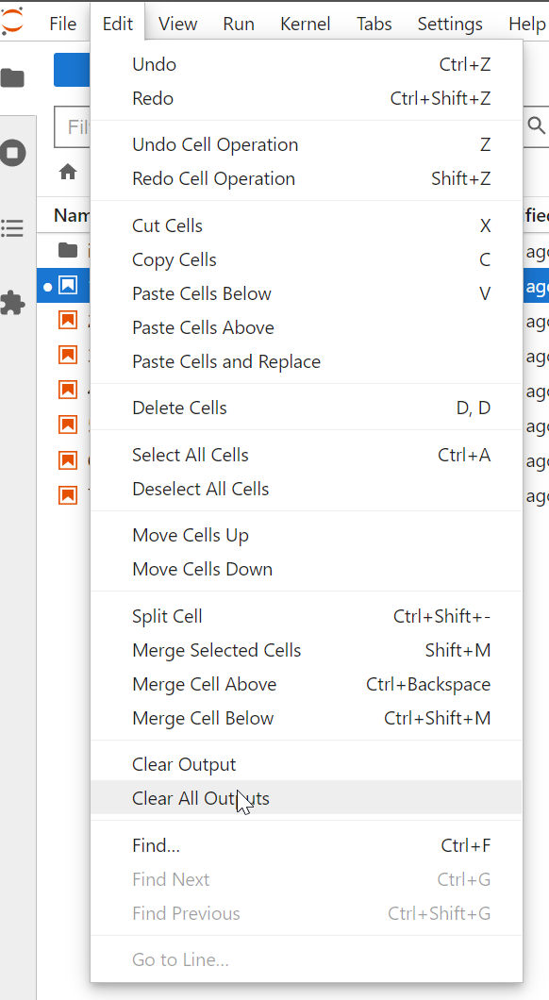